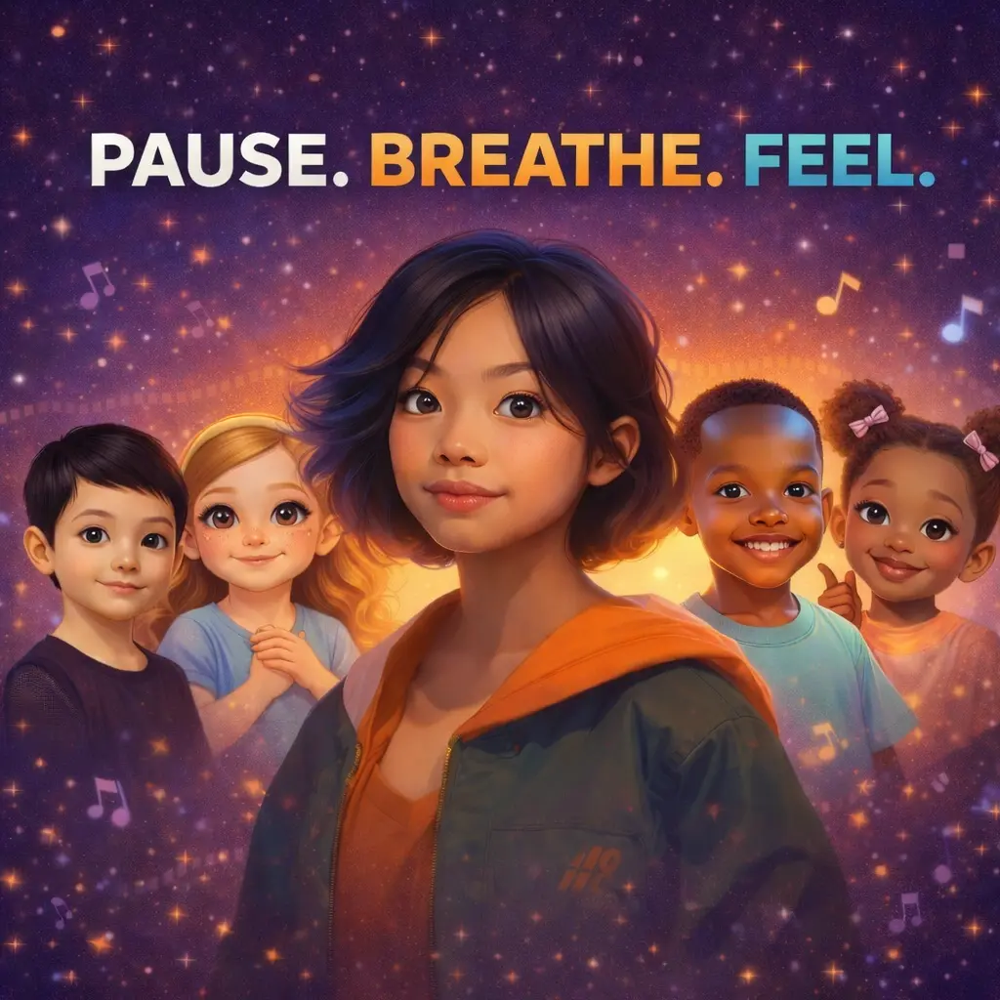
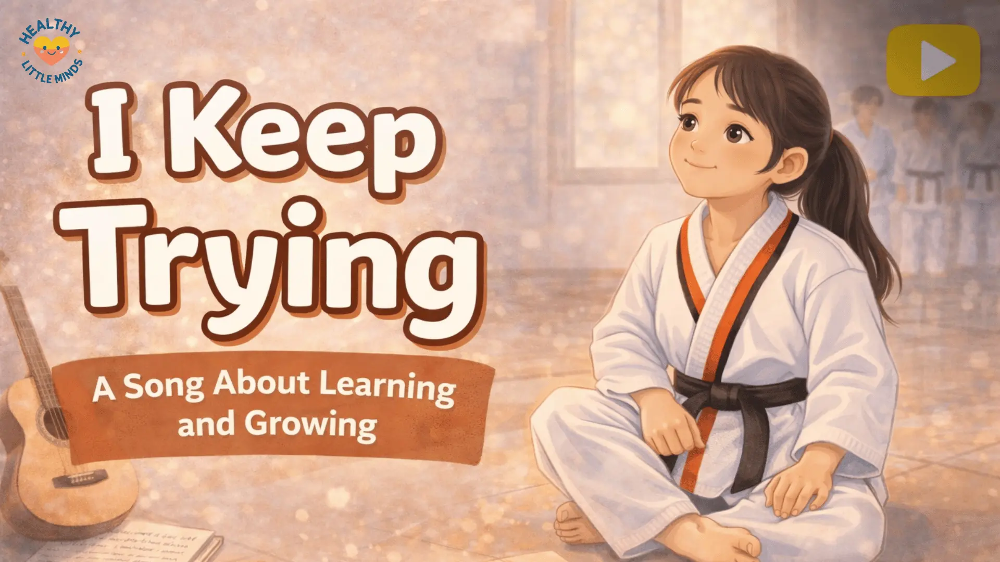

Pause. Breathe. Feel.
CalmYouTube
Pause. Breathe. Feel.
A gentle breathing song for calm-down moments, classroom transitions, and bedtime routines.
Reflection prompt: What feeling did you hear most?
Music library
Gentle songs can help children slow down, name feelings, and practise helpful emotional skills through rhythm and repetition.

Featured songs
A gentle breathing song for calm-down moments, classroom transitions, and bedtime routines.
Reflection prompt: What feeling did you hear most?

Keep Trying, EllaAn encouragement song inspired by Ella’s story about effort, patience, and trying again.
Reflection prompt: What is one small thing you can try again today?